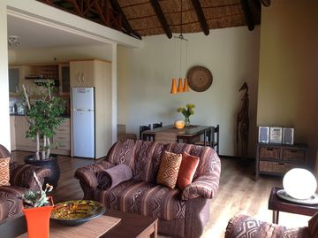

Self Catering Accommodations

Apartment 1
Das Wohnareal selbst ist eingefriedet und über ein fernbedienbares Tor gegen
Apartment 2
Das Wohnareal selbst ist eingefriedet und über ein fernbedienbares Tor gegen
Apartment 3
Das Wohnareal selbst ist eingefriedet und über ein fernbedienbares Tor gegen
We are here
Newsletter
Quam tristique pharetra. Mi ipsum diam a volutpat vulputate, fames.